Работа Мечты
Created by potrace 1.15, written by Peter Selinger 2001-2017
Home
Created by potrace 1.15, written by Peter Selinger 2001-2017
Time Management
Created by potrace 1.15, written by Peter Selinger 2001-2017
Inbox
Created by potrace 1.15, written by Peter Selinger 2001-2017
Calendar
Created by potrace 1.15, written by Peter Selinger 2001-2017
Analytics
Created by potrace 1.15, written by Peter Selinger 2001-2017
Settings
Hi Filip,
Checkout your latest projects and their progress.
THIS WEEK
THIS MONTH
THIS YEAR
